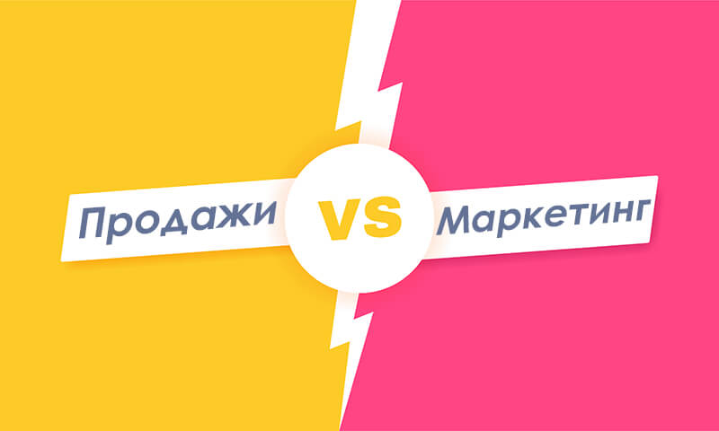

Речь узких специалистов пестрит множеством терминов, смысл которых бывает неясен людям, далеким от данной профессии. В маркетинге один из таких терминов – лид. Маркетологи оперируют «лидами», но редко объясняют их значение. В статье подробнее рассмотрим, что это такое и какую роль играют лиды в бизнесе.
Что такое лиды в продажах простыми словами
Лиды (lead) – это люди, с которой у компании произошел контакт, предполагающий продажу сиюминутно или в перспективе.
Проще говоря, это потенциальные клиенты, которые ищут и заинтересовались товаром. Они пишут в чат, в соцсети или на почту, звонят для консультации по телефону, подписываются на рассылку или паблик, оставляют заявку. Все это лиды.
Лиды в рекламе и интернет-маркетинге
Однако в разрезах рекламы, интернет-маркетинга и продаж трактовка лидов может отличаться. Так, для рекламщика лид – это пользователь, который положительно отреагировал на рекламное объявление.
Маркетологи называют лидами только тех, кого можно отследить, «подогреть» и подвести к покупке. Это пользователи, которые оставили адрес электронной почты, номер телефона, ссылку на профиль в соцсети.
В прямых продажах менеджеры не гонятся за каждым потенциальным клиентом. На данном уровне лид – это тот, кто готов купить. Например, человек, который не просто спрашивает цену, а берет в руки и рассматривает конкретный товар ближе, примеряет, сравнивает несколько вариантов, собираясь выбрать один.
Синхронизация отделов маркетинга и продаж

Важно, чтобы отделы продаж и маркетинга работали вместе. Это возможность добиться роста числа закрытых сделок в среднем на 20% в год. Разрозненность работы маркетологов и менеджеров по продажам, отсутствие единого курса на повышение прибыли обязательно ведет к ее снижению примерно на 5% ежегодно.
Маркетологам необходимо сосредоточиться на поиске качественных лидов, т. е. приводить тех, кто готов сделать выбор и совершить покупку. При этом продажники должны предоставлять маркетологам обратную связь по проектам.
Привлечение лидов должно начинаться с согласования этого термина и его окончательного понимания обеими сторонами. В противном случае добиться успеха будет сложно.
Что такое лидогенерация и кому нужна
Лидогенерация – это мероприятия, направленные на поиск и привлечение потенциальных клиентов, получение их контактных данных, подведение к покупке.
{kind=link}
Стартовый этап – изучение интересов и составление портрета ЦА. После этого маркетолог разрабатывает план лидогенерации в зависимости от того, какая аудитория является целевой.
- Прямая – для потребителей и партнеров, которые сами активно интересуются товаром или услугой.
- Косвенная – для аудитории, которая еще не знает о продукте и не понимает, зачем его приобретать.
В лидогенерации заинтересованы:
- интернет-бизнес, которому нужно подогревать аудиторию, прежде чем закрывать продажи;
- оффлайн-бизнес, который распространяет информацию о продуктах и акциях путем рассылки сообщений;
- сотрудникам компаний, которые работают по KPI, и чья зарплата определяется числом собранных контактов.
Что такое лид-менеджмент
Лид-менеджмент – отдельное направление в работе с лидами. Оно предполагает анализ и проработку данных о клиенте на всех ступенях воронки продаж вплоть до закрытия первой сделки.
Главное назначение лид-менеджмента – выстроить путь клиента и понять, как его можно эффективно склонить к покупке.
Здесь важно учитывать абсолютно весь трафик, ведь любой лид может стать реальным клиентом.
Вся работа в рамках лид-менеджмента включает 4 задачи, которые следуют строго одна за другой.
- Захват. Выстраивание стратегии продвижения, выделение каналов маркетинга.
- Обогащение и отслеживание. Сбор, фиксация и подтверждение данных о клиенте с целью сегментации.
- Квалификация. Распределение лидов на целевые и нецелевые, соотнесение пользователей со ступенями воронки продаж.
- Взращивание. «Подогрев» аудитории и доведение до момента продажи.
Правильно выстроенная лидогенерация помогает увеличить результативность и правильно распределить бюджет.
Разница между лидами и конверсией
Наверняка некоторые слышали фразу «конверсия в лид». Понятия «лид» и «конверсия» неразрывно связаны. Имея представление о лиде, разобраться с конверсией будет нетрудно даже неопытному маркетологу и предпринимателю.
Если лид – это тот, кто оставил заявку, то конверсия – это соотношение посетителей сайта и лидов.
Говоря «конверсия в лид», подразумевается процент потенциальных клиентов, которые не просто зашли на сайт, а заинтересовались и оставили данные с перспективой покупки.
Виды классификации лидов
Все лиды можно разделить на несколько видов по двум основным и дополнительному признакам:
- Заинтересованность в продукте:
{kind=link}
- Целевые – люди, которые сами вышли на товар или получили информацию о нем и хотят приобрести.
- Нецелевые – пользователи, чьи данные каким-то образом попали в компанию, но им не интересен продукт, они не собираются его покупать.
- Готовность купить:
{kind=link}
- Холодные – мало знают о продукте и пока не осознают потребности в нем. Их желательно мягко подводить к покупке, но в процессе этого большая часть таких людей отсеется. Холодные клиенты чаще оставляют емейл или телефон случайно, либо их покупают.
- Теплые – видят потребность в услуге или товаре и хотят купить, но сомневаются по какой-то причине сделать следующий шаг (дорого, сомнительное качество, нет гарантий, не нравится дизайн и т. д.). Им нетрудно продавать, если пообщаться, привести аргументы в пользу продукта и закрыть возражения.
- Горячие – это клиенты, которые готовы купить прямо сейчас. Работать с ними нужно точно и быстро, тогда вероятность продажи составляет практически 100%.
- Дополнительно:
- Гарантированные – контакты попали именно в ту компанию, для которой предназначались, например, через соцсети или сайт.
- Потребительские – лиды сегментированы и сгруппированы по разным параметрам (пол, возраст, регион, профессия и т. д.). Они продаются компаниям по соответствующим признакам.
Этапы работы с лидами
Компании устанавливают свой алгоритм и политику работы с потребителями, но существуют универсальные этапы, которые, скорее всего, будут актуальны в любом бизнесе независимо от сферы деятельности. Рассмотрим 6 основных этапов работы с лидами.
{kind=link}
Установление контакта
По сути, это базовая стадия – подготовка. Представитель компании должен расположить клиента, чтобы перейти к дальнейшим действиям. Дружелюбие, искренность в общении, интерес к личным моментам жизни человека – все это основа завоевания внимания и начального доверия.
Выявление потребности
Очень важно выяснить, для чего потребителю нужен продукт, какие проблемы он планирует решать с его помощью. Здесь менеджеру необходимо задавать как можно больше вопросов и проводить анализ ответов. Вот несколько примеров.
- Покупали ли вы такой товар ранее? Какие впечатления от использования?
- Что в приоритете – повышение продуктивности или экономия?
- Есть ли у вас такая-то проблема (с которой фирма или продавец может помочь) в настоящее время?
На этом этапе важно найти и определить ключевые болевые точки потребителей, поэтому пропускать его нежелательно. Оптимально сформировать и использовать на деле чек-лист в работе с потенциальными клиентами.
Презентация
Зная проблемы отдельно взятого человека, можно рассказать о товаре или услуге так, чтобы он проявил интерес и увидел потребность. Менеджер при демонстрации продукта должен общаться с потребителем на его языке, акцентируя внимание на той информации, которую лид уже обозначил на предыдущем этапе.
Работа с возражениями
Почти у всех появляются возражения при рассказе о продукте или после него. Важно, чтобы менеджеры умели правильно на них отвечать. Среди самых популярных возражений:
- мне это не нужно;
- дорого;
- у вас не самый лучший продукт или условия;
- я подумаю.
Грамотная презентация сразу закрывает большинство возражений. Их либо возникает мало, либо не появляется вообще.
Закрытие сделки
Закрытие сделки – это оплата заказа. На данном этапе менеджер занимается подведением клиента к покупке и делает комплект необходимых документов для оформления.
Постпродажное сопровождение
Мало закрыть однократную продажу – важно сделать клиента постоянным. Это гораздо дешевле, чем привлекать нового покупателя. В процессе постпродажного сопровождения компания удерживает клиента, препятствуя его уходу к конкурентам.
Способы получения лидов
Лидогенерация происходит по-разному. Часто на привлечение клиентов закладывается огромный бюджет. Все пути получения лидов можно разделить на 2 категории: оффлайн и онлайн.
Оффлайн
Оффлайн-методы характерны больше для сегмента В2В, где важно личное общение.
- Телефонные звонки. Обычно это холодные прозвоны и лиды, которых нужно подогревать. Но и в этом случае личное общение позволяет сделать переговоры персонализированными, выявить потребности потенциального клиента и заинтересовать его.
- Выставки и конференции. Это благодатная почва для сбора контактов, т. к. все участники мероприятия – потенциальные лиды, причем теплые. Здесь можно обменяться визитками, брошюрами, записать прямые телефоны заинтересовавшихся клиентов с комментариями и оставить свой номер.
- Наружная реклама. Позволяет охватить большую аудиторию и собрать целевые номера людей, которые заинтересовались товаром/услугой.
Онлайн
Онлайн-каналы получения лидов наиболее доступны для любых коммерческих структур. Какие-то практически не требуют вложений, другие обязывают иметь немалый бюджет. Так или иначе, их преимущество в возможности измерить лидогенерацию, что дает понимание эффективности маркетинговой стратегии.
- SEO-продвижение. Сайт должен находиться на первых местах в выдаче крупных поисковых систем (Google, Яндекс), чтобы пользователи заходили на него и могли читать информацию.
- Контекстная реклама. Это базовый метод захвата внимания потенциальных клиентов, особенно, когда речь идет о первых лидах для стартапа.
- Таргетированная реклама. С помощью социальных сетей можно привлечь покупателей наряду с сайтом. Запускать такую рекламу целесообразно сразу после него.
- Баннерные и тизерные сети. Один из простейших и эффективных путей привлечения лидов – достаточно просто разместить объявление.
- Биржи лидов. Это площадка, где можно заказать тематические лиды на желаемых условиях (стоимость, предмет оплаты и т. д.).
- Доски объявлений. Почти невостребованы, но все же могут стать источником холодных лидов.
- Кросс-промоушн. Программы для перекрестного продвижения по взаимным договоренностям.
- Email-рассылка. Хороший способ привлечь внимание людей, которые подписались и читают блог. Постоянное упоминание бренда или продукта подогревает интерес и повышает лояльность пользователей.
Сервисы и инструменты для самостоятельной лидогенерации
Многие компании предпочитают обходить стороной готовые базы и стремятся собирать данные о потенциальных потребителях своими силами. Для этого применяют целый ряд инструментов.
- CRM. Комплексная система для фиксации всех связей с потенциальными клиентами, отслеживания их действий на сайте, получения и автоматизации обратной связи.
- Онлайн-консультант. Штатный сотрудник, который моментально реагирует на сообщения пользователей в чате, дает быстрые ответы на вопросы, помогает сориентироваться на сайте, рассказывает об акциях, фиксирует данные за любой месяц, находит счет, поднимает историю.
- Всплывающие окна. Поп-ап окно с интересным предложением – хороший способ получить e-mail пользователя. Пример: скидка за подписку.
- Лид-формы. С помощью таких форм посетителям предлагают получить что-то актуальное в обмен на электронный адрес. Пример: первые главы книги бесплатно.
- Чат-боты. Помогают рассказывать о продукте, консультировать пользователей, отвечать на вопросы, фиксировать контакты.
- Лид-магниты. Это бонусы или мини-подарки, которые пользователи получают в обмен на оставленные данные. Пример: опрос, за прохождение которого человек получит бесплатный доступ к скачиванию книги на английском языке на 24 часа или базу актуальных вакансий.
- Сервисы аналитики. Благодаря им возможно отслеживать действия посетителей сайта онлайн. Их функции позволяют получить информацию о поведении пользователей, переходах, кликах для понимания актуальности контента.
Каждый из этих инструментов позволяет собирать собственную базу лидов, но наибольшего охвата удается добиться, используя несколько средств одновременно.
Как оценить эффективность
Не существует одного инструмента, который рассчитывает эффективность лидогенерации. Чтобы оценить, насколько хорошо идет сбор лидов, рекомендуют использовать комплексный подход.
- Цена заявки. Определяется как соотношение расходов на рекламу и числа лидов. Рассчитывать этот параметр желательно ежемесячно. Чем выше стоимость продукта, тем дороже обойдется одна заявка.
- Потенциал. Предполагаемая прибыль от сделки. Как правило, это договорная стоимость или сумма среднего чека.
- Качество. Этот параметр показывает, сколько потенциальных клиентов становятся реальными.
- ROMI. Дает понимание, насколько хорошо окупается рекламная кампания. Для расчета требуется вычесть расходы на рекламу из прибыли и полученное значение умножить на 100%. Показатель свыше 100% говорит о прибыльности.
- Лид-скоринг. Фактор оценки «теплоты» лида. Благодаря балльной системе удается предугадать вероятность превращения лида в покупателя.
Все перечисленные инструменты в комплексе позволяют составить представление о результативности лидогенерации.
Лиды в CRM
CRM – это единая корпоративная система для организации работы всех управляющих звеньев компании. Она позволяет собирать, хранить информацию обо всех точках касания с потенциальными и реальными клиентами, а также систематизировать их данные.
{kind=link}
В CRM хранятся все электронные письма, запросы, совершенные и запланированные звонки, результаты переговоров, специальные и акционные предложения.
Что такое лид в CRM
Все контакты в CRM можно разделить на 3 категории:
- Заинтересованные пользователи – работа с ними ведется чаще анонимно, т. к. из контактов компания/магазин может иметь лишь профиль в соцсети или на другом сайте. Как только такой пользователь предоставит телефон или email, он переходит в категорию лидов.
- Лиды или потенциальные клиенты – уже готовы купить, их достаточно немного подвести, и продажа будет закрыта.
- Реальные клиенты или контрагенты – частные лица или представители организаций, которые уже купили/подписали договор, т. е. стали клиентами компании.
Правильное разделение пользователей на категории и грамотное взаимодействие с ними позволяют работать в CRM наиболее эффективно.
Как работать с лидом в CRM
От правильной работы менеджера зависит, удастся ли закрыть сделку. Рассмотрим пошагово алгоритм взаимодействия.
{kind=link}
Получение лида
Получить контакты пользователя можно разными путями:
- личная встреча;
- звонок по телефону;
- электронное письмо;
- заявка через сайт;
- рекомендация (сарафанное радио) и т. д.
В зависимости от того, как потенциальный клиент обратился в организацию, строится взаимодействие с ним.
После получения контакта вручную или автоматически создается карточка в CRM, а сами данные проверяются на корректность/достоверность.
Проверка на дубли
Сразу после создания отдельной карточки контакт проверяется на наличие дублей в системе. Поиск осуществляется по всем базам, в т. ч. потенциальных и реальных клиентов. В сравнении участвуют все параметры: телефоны, email, адреса и т. д.
Нужно стремиться к тому, чтобы в системе не было дубликатов клиентских данных. В противном случае работать с такой базой будет трудно и неудобно.
Назначение ответственного
Назначение ответственного менеджера происходит по-разному:
- ответственным становится сотрудник, который первым начал взаимодействие с покупателем;
- назначение выполняется с учетом особенностей заявки, например, розничные продажи обслуживает один менеджер, оптовые – другой;
- вручную руководителем по личной оценке.
Постановка задач
Работа с пользователем стартует с постановки задачи менеджеру, который должен начать общение. Это может быть «отправить письмо на email» или «позвонить по телефону и ответить на вопрос». За выполнением одной задачи идет постановка следующей на основании результатов предыдущего взаимодействия. Могут быть и дополнительные промежуточные задачи, инициированные руководителем отдела продаж.
Обработка лида
Это самый важный этап. Он того, как менеджер работает с лидом, зависит его трансформация в реального клиента и закрытие продажи. Здесь актуально выявление потребностей человека или компании, обсуждение различных вариантов сотрудничества, предложение наиболее выгодных условий и цен, подведение к покупке. В CRM заводится карточка клиента.
Важно вести отчетность в CRM по каждой задаче, чтобы была возможность отследить результативность работы менеджеров и причины незакрытия продаж.
Создание из лида контакт или клиента
Согласие купить товар или воспользоваться услугой – триггер для преобразования лида в клиента или контакт. На этом этапе компания получает дополнительные данные о покупателе.
- Для частных лиц: полное имя, город и адрес проживания, телефон или емейл для связи и т. д.
- Для организаций: ИНН, документы о гос. регистрации и т. д.
Также при формировании контакта часто меняется не только ответственное лицо, но даже отдел. Карточка клиента должна быть объединена с карточкой лида, для возможности отслеживания данных о клиенте с самого начала сотрудничества.
Специфика лидогенерации в разных сферах
Особенности привлечения лидов зависят от того, в какой области работает компания. В каждой сфере отслеживают конверсию к определенному этапу, например, к покупке, лиду или регистрации. Эффективность можно оценить путем сопоставления общего числа посетителей к их активной части.
Лидогенерация в SaaS
Здесь отслеживают конверсию в регистрацию. Простота сервиса, легкость настройки и управления, наличие информации для поддержки пользователей, обучающих или полезных материалов, видео, источников знаний, новостей – все это повысит процент лидогенерации.
Однако в сфере SaaS нужно учитывать затраты на разработку ПО, запуск сервисов, привлечение потенциальных потребителей.
Лидогенерация в e-Commerce
Все, что касается прямых продаж онлайн, оценивается конверсией в продажу. Если показатели низкие, стоит взглянуть на параметры рекламы, каналы связи, корпоративную CRM, сайт. Для улучшения результативности лидогенерации нужно проанализировать и оценить работоспособность каждого из них с точки зрения потребителя.
Лидогенерация в b2b сферах
Сегмент b2b предполагает многоступенчатые продажи, поэтому лидогенерация в этом случае нужна для формирования базы потенциальных клиентов. С ними менеджер продолжит более плотную работу в будущем. Для получения лидов в сфере b2b используются следующие методы:
- личные продажи: прозвон, общение с потенциальными лидами на выставках, семинарах, конференциях, личные встречи;
- онлайн: корпоративный сайт, группы компании в соцсетях или страницы первых лиц, блог, экспертные статьи, кейсы, исследования, вебинары, медийная реклама;
- директ-маркетинг: создавайте рассылки в sms, мессенджерах, на email и даже бумажные письма.
Главная задача лидогенерации в сегменте b2b – заинтересовать лицо, принимающее решение.
Модели оплаты привлечения лидов
Нынешние агентства практикуют 3 основные модели оплаты услуги получения контактов.
- CPA-модель или оплата за действие. Компания оплачивает лид только после совершения им целевого действия. Последнее может быть любым: заявка, подписка, покупка.
- CPC-модель или оплата за клик. Компания оплачивает всех людей, которые кликнули по рекламе.
- CPL-модель или оплата за лид. Деньги списываются за каждого пользователя, который оставил контакты в анкете. Хитрость этой модели в том, что лид, который не заполнил форму, но купил, оплачивать не нужно.
Стоимость лида (CPL)
Cost Per Lead – это показатель стоимости привлечения одного лида. Рассчитывать его нужно для оценки и отслеживания результативности работы каналов маркетинга. Суть в том, чтобы каждый лид не просто окупался, а приносил прибыль.
Благодаря этому показателю можно:
- фиксировать целевые действия потенциальных клиентов;
- получать данные о стоимости лидов;
- изучать и оценивать разные каналы продвижения, выбирая наиболее результативные.
Как рассчитать
Стоимость лида рассчитывают по формуле:

CPL = Расходы на привлечение / Число лидов
Расходы на привлечение включают все издержки компании на поддержание работы маркетинговых каналов в течение заданного времени.
Число лидов – общее количество потенциальных клиентов, которых удалось привлечь посредством лидогенерации.
Примеры расчета
Предположим, что фирма за 30 дней потратила на рекламу в Яндекс Директ 150 тысяч р. За это же время поступило 80 заявок с контактами пользователей. Рассчитаем стоимость привлечения одного лида.
150000 / 80 = 1875
Стоимость привлечения одного потенциального клиента составила 1875 р. Если сумма среднего чека больше, лидогенерацию можно считать эффективной.
Как снизить CPL
Компании стремятся предельно снизить стоимость лида, чтобы получать больше прибыли. Для этого существует несколько способов:
- использовать новые каналы притока потребителей;
- проанализировать и заменить неэффективные каналы;
- пересмотреть и улучшить содержание рекламных объявлений;
- перенастроить рекламный кабинет;
- проанализировать и оптимизировать воронку продаж;
- проработать сайт с целью повышения конверсии;
- усилить оффер на сайте.
Каждое из этих действий отдельно и все в комплексе положительно сказываются на стоимости лида.
Основные причины потери лидов
Маркетологи утверждают, что компании, которые не используют в работе CRM, теряют до 40% потенциальных покупателей. Рассмотрим наиболее частые ошибки, из-за которых лиды отказываются от покупки.
- Теряются контакты. При ручном заполнении базы сотрудником потери данных неизбежны. В этом случае автоматизация современных CRM позволяет избежать этой проблемы.
- Теряются лиды. Несогласованность менеджеров компании, работа с одним контактом нескольких сотрудников может создать неблагоприятное впечатление и заставить лида уйти к более организованным конкурентам.
- Сложности с оценкой эффективности. Вручную можно рассчитывать основные показатели лидогенерации, конверсии. Когда речь идет о более глубоком анализе, без современной системы аналитики обойтись трудно.
Заключение
Каждый лид – это путь для расширения клиентской базы и роста прибыли всей компании. Собирая данные, можно составить портрет потенциального покупателя, больше о нем узнать, заинтересовать, составить план продвижения продукта на рынке среди конкурентов. Грамотная работа с этой информацией дает возможность трансформировать лидов в реальных клиентов, успешно закрывать продажи и повышать доходность бизнеса.